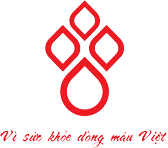
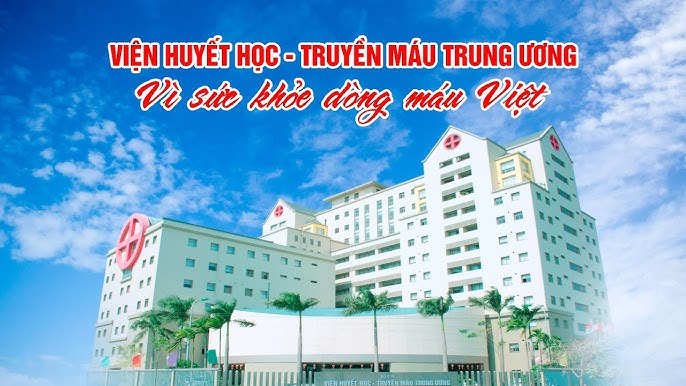

GIỚI THIỆU
LỊCH SỬ VIỆN

Viện Huyết học – Truyền máu Trung ương ra đời vào ngày 31/12/1984 theo Quyết định số 1531/BYT-QĐ của Bộ trưởng Bộ Y tế với tên gọi ban đầu là Viện Huyết học và Truyền máu, thuộc Bệnh viện Bạch Mai, do GS. Bạch Quốc Tuyên là Viện trưởng. Viện thành lập trên cơ sở sáp nhập hai đơn vị là Khoa Huyết học – Truyền máu và Phòng Bệnh máu (C5).
Sự ra đời của Viện Huyết học và Truyền máu đánh dấu bước trưởng thành không ngừng của đội ngũ cán bộ chuyên khoa và khẳng định nhu cầu tất yếu phải phát triển chuyên khoa Huyết học – Truyền máu để đáp ứng cho công tác cấp cứu và điều trị.
Tại thời điểm đó, Viện có 1 phòng (khoa) lâm sàng (C5), các labo tế bào, đông máu, hóa sinh – huyết học, di truyền và phòng hành chính, phòng trữ máu (tiếp nhận, lưu trữ máu), phòng miễn dịch. Cán bộ, nhân viên có khoảng 80 người, bao gồm cả cán bộ Bộ môn Huyết học – Truyền máu.
Viện có chức năng và nhiệm vụ ở thời kỳ này bao gồm:
– Nghiên cứu việc lấy máu, trữ máu, sử dụng máu, điều chế các thành phẩm của máu nhằm đảm bảo yêu cầu kịp thời an toàn, hợp lý, tiết kiệm.
– Nghiên cứu việc dự phòng và điều trị các bệnh về máu cho phù hợp với điều kiện, hoàn cảnh của người Việt Nam.
– Nghiên cứu điều chế một số sinh phẩm sử dụng cho các xét nghiệm chẩn đoán về máu.
– Nghiên cứu chuẩn hóa các xét nghiệm về máu và đề xuất những quy định chuyên môn kỹ thuật trong việc lấy máu và truyền máu để áp dụng thống nhất trong cả nước.
– Cùng với Trường Đại học Y Hà Nội đào tạo và bổ túc cán bộ chuyên khoa Huyết học và Truyền máu.
– Phổ biến các kiến thức về chuyên khoa; Biên soạn các tài liệu phổ thông về cho máu, nhận máu để cùng với Nhà nước tuyên truyền bảo vệ sức khỏe, phổ biến rộng rãi trong nhân dân.
– Theo dõi, hướng dẫn giúp đỡ về chuyên môn kỹ thuật mạng lưới chuyên khoa Huyết học và Truyền máu trong cả nước.
– Tổ chức quản lý xây dựng Viện trên cơ sở những quy định về chế độ, chính sách đã được Nhà nước và Bộ Y tế ban hành.
Ngày 29/5/1990, Bộ Y tế ký Quyết định số 427/BYT-QĐ phê duyệt luận chứng kinh tế, kỹ thuật cải tạo, mở rộng Viện Huyết học và Truyền máu, Bệnh viện Bạch Mai. Giai đoạn này số lượng các khoa phòng đã tăng lên, cán bộ nhân viên lên đến 100 người, trang thiết bị đã đầy đủ và đồng bộ hơn trước.
Sau 20 năm thành lập (1984-2004), Viện đã có những bước tiến dài về mọi mặt và nhiệm vụ đặt ra là phải xây dựng viện chuyên khoa đầu ngành để chỉ đạo chuyên môn, đào tạo cán bộ chuyên khoa, phát triển chuyên khoa sâu về Huyết học – Truyền máu để tăng cường năng lực chẩn đoán và điều trị bệnh máu, bảo đảm cung cấp máu và chế phẩm máu an toàn cho nhu cầu điều trị tại Hà Nội và các khu vực lân cận.
Ngày 08/3/2004, Viện Huyết học – Truyền máu Trung ương chính thức tách ra hoạt động độc lập, trực thuộc Bộ Y tế (theo quyết định số 31/2004/QÐ-TTg của Thủ tướng Chính phủ). Đây là dấu mốc quan trọng để Viện Huyết học – Truyền máu Trung ương thể hiện rõ vị trí, vai trò của mình trong công tác chăm sóc sức khỏe nhân dân, xứng đáng là Viện chuyên khoa đầu ngành, ngang tầm với khu vực và quốc tế.
Vượt qua vô vàn khó khăn về nhân lực, tài chính, cơ sở vật chất, áp lực chuyên môn… Viện đã đạt được nhiều thành tựu quan trọng, trở thành đơn vị Anh hùng Lao động trong thời kỳ đổi mới và luôn giữ vững chất lượng chuyên môn của Viện đầu ngành về chuyên khoa Huyết học – Truyền máu trên toàn quốc.
Về lĩnh vực Huyết học: Viện đã xây dựng được hệ thống phòng xét nghiệm hàng đầu ở Việt Nam trong lĩnh vực Huyết học với đội ngũ chuyên gia, cán bộ, nhân viên tâm huyết, giàu kinh nghiệm, thường xuyên cập nhật những kỹ thuật tiên tiến trên thế giới. Nhờ đó, nhiều kỹ thuật cao về đông máu, miễn dịch, di truyền, sinh học phân tử… đã được triển khai như: Áp dụng xét nghiệm sinh học phân tử vào chẩn đoán trước sinh các bệnh máu di truyền trên cả mẫu tế bào ối và tế bào phôi, chẩn đoán các ca bệnh khó, theo dõi các ca bệnh điều trị bằng phương pháp nhắm đích, ghép tế bào gốc.
Với chất lượng chuyên môn cao và thực hiện tốt các hoạt động vì người bệnh, Viện đã trở thành cơ sở điều trị bệnh máu và cơ quan tạo máu lớn nhất cả nước, được người bệnh và nhân dân tin tưởng. Từ chỗ chỉ có một đơn nguyên lâm sàng là Phòng Bệnh máu (C5) với 35 giường bệnh, sau 35 năm, Viện đã có 8 đơn vị lâm sàng, số lượng người bệnh điều trị nội trú luôn duy trì từ 1.200 – 1.300 người mỗi ngày. Năm 2019, bệnh nhân đến khám là 154.829 lượt (gấp trên 41 lần so với năm 2004), bệnh nhân điều trị nội trú là 41.480 lượt (gấp trên 12 lần so với năm 2004).
Từ năm 2006, Viện bắt đầu triển khai kỹ thuật ghép tế bào gốc và đến nay đã thực hiện được 400 ca ghép, trở thành đơn vị ghép tế bào gốc nhiều nhất và có chất lượng tại Việt Nam. Năm 2014, Viện đã thành lập Ngân hàng tế bào gốc máu dây rốn cộng đồng và thực hiện thành công ghép tế bào gốc từ máu dây rốn không cùng huyết thống vào đầu năm 2015, mở ra hy vọng cho rất nhiều bệnh nhân mắc bệnh máu mà không có người hiến tế bào gốc phù hợp. Hiện nay, Ngân hàng tế bào gốc máu dây rốn cộng đồng đang lưu trữ trên 4.000 mẫu phục vụ cho ghép tế bào gốc điều trị các bệnh máu và các bệnh lý liên quan khác.
Đối với nhóm bệnh máu di truyền như hemophilia, thalassemia, Viện đã nỗ lực, tìm mọi cách nâng cao chất lượng chẩn đoán, điều trị ngang tầm với các nước trong khu vực; Tổ chức các hoạt động Hội, kết nối, hỗ trợ cả về vật chất lẫn tinh thần nhằm đem lại cuộc sống tốt đẹp hơn cho người bệnh. Trong điều kiện nguồn lực còn hạn chế, các hoạt động vận động chính sách, hợp tác quốc tế, truyền thông về các bệnh máu di truyền và bước đầu tầm soát gen bệnh thalassemia cũng được đẩy mạnh, hướng tới mục tiêu giảm dần số trẻ sinh ra bị bệnh và nâng cao chất lượng dân số Việt Nam.
Về lĩnh vực Truyền máu: Viện đã xây dựng được Trung tâm Máu Quốc gia đồng bộ, hoàn chỉnh từ tuyên truyền, vận động hiến máu, tổ chức tiếp nhận máu, sàng lọc, điều chế, lưu trữ, phân phối máu và các chế phẩm máu với công suất lớn, kỹ thuật hiện đại.
Viện đã khởi xướng và tổ chức thành công nhiều chương trình, sự kiện vận động hiến máu có quy mô lớn, đa dạng về mặt hình thức và nội dung, mang tính nhân văn, góp phần thúc đẩy phong trào hiến máu tình nguyện phát triển. Đặc biệt, Viện đã tổ chức thành công Lễ hội Xuân Hồng và chương trình Hành trình Đỏ – chương trình vận động hiến máu có quy mô lớn nhất cả nước nhằm khắc phục tình trạng thiếu máu vào dịp Tết và dịp hè ở nước ta, hướng tới mục tiêu chất lượng, hiệu quả, bền vững.
Trong những năm qua, lượng máu tiếp nhận được hàng năm đã tăng lên nhanh chóng. Từ chỗ mới đạt gần 3.500 đơn vị máu vào năm 1994 và chỉ có khoảng 10% lượng máu tiếp nhận từ người hiến máu tình nguyện, đến năm 2019, lượng máu tiếp nhận đã đạt hơn 355.000 đơn vị, trong đó tỷ lệ hiến máu tình nguyện chiếm trên 98%. Trung tâm Máu Quốc gia đã điều chế được trên 640.000 đơn vị chế phẩm máu có chất lượng, đảm bảo an toàn truyền máu, cung cấp cho 170 bệnh viện phục vụ nhu cầu cấp cứu, điều trị của 25 tỉnh, thành khu vực phía Bắc.
Các hoạt động nghiên cứu khoa học, đào tạo, chuyển giao kỹ thuật cho tuyến dưới, các chương trình, dự án được thực hiện thường xuyên, hiệu quả góp phần thúc đẩy hệ thống Huyết học – Truyền máu trên toàn quốc. Viện cũng đã xây dựng và duy trì mối quan hệ hợp tác quốc tế gắn bó nhằm trao đổi, tiếp cận với những tiến bộ của y học thế giới; đồng thời nhận được nhiều nguồn lực hỗ trợ của bạn bè quốc tế, đem lại lợi ích to lớn cho người bệnh.
LÃNH ĐẠO VIỆN

Thông tin
- Họ và tên: Bạch Quốc Tuyên
- Chức danh: Giáo sư, Bác sĩ
- Vị trí: Viện trưởng Viện Huyết học
- Giai đoạn công tác: 1985 – 1992
Đóng Góp nổi bật
- Nghiên cứu: Thực hiện nhiều nghiên cứu quan trọng và áp dụng phương pháp điều trị tiên tiến trong huyết học.
- Đào tạo: Đào tạo nhiều bác sĩ và nhà nghiên cứu trẻ, nâng cao nguồn nhân lực chất lượng cao.
- Hệ thống chẩn đoán: Nâng cao chất lượng hệ thống xét nghiệm và chẩn đoán bệnh lý về máu.
- Hợp tác quốc tế: Mở rộng hợp tác quốc tế, cập nhật tiến bộ khoa học kỹ thuật mới.
- Chăm sóc bệnh nhân: Cải thiện chất lượng chăm sóc và hỗ trợ bệnh nhân mắc bệnh về máu.

Thông tin
- Họ và tên: Đỗ Trung Phấn
- Chức danh: Giáo sư, Tiến sĩ Khoa học
- Vị trí: Viện trưởng Viện Huyết học
- Giai đoạn công tác: 1993 – 2003
Đóng Góp nổi bật
- Nghiên cứu: Tiến hành nhiều nghiên cứu đột phá trong lĩnh vực huyết học, đóng góp vào sự phát triển của y học hiện đại.
- Đào tạo: Đào tạo nhiều thế hệ bác sĩ và nhà nghiên cứu, góp phần nâng cao trình độ chuyên môn của nguồn nhân lực.
- Hệ thống chẩn đoán: Cải tiến và hiện đại hóa hệ thống chẩn đoán bệnh lý về máu, áp dụng các kỹ thuật mới.
- Hợp tác quốc tế: Thúc đẩy hợp tác với các tổ chức quốc tế, đem lại những tiến bộ khoa học công nghệ vào Việt Nam.
- Chăm sóc bệnh nhân: Nâng cao chất lượng dịch vụ chăm sóc và điều trị cho bệnh nhân mắc các bệnh về máu.

Thông tin
- Họ và tên: Nguyễn Anh Trí
- Chức danh: Giáo sư, Tiến sĩ
- Vị trí: Viện trưởng Viện Huyết học
- Giai đoạn công tác: 2003 – 2017
Đóng Góp nổi bật
- Nghiên cứu: Dẫn đầu nhiều dự án nghiên cứu quan trọng, cải tiến phương pháp điều trị và chăm sóc bệnh nhân huyết học.
- Đào tạo: Đào tạo và phát triển nhiều thế hệ bác sĩ, chuyên gia huyết học có tay nghề cao.
- Hệ thống chẩn đoán: Đẩy mạnh ứng dụng công nghệ tiên tiến trong chẩn đoán và điều trị bệnh về máu.
- Hợp tác quốc tế: Mở rộng hợp tác quốc tế, đưa các tiến bộ khoa học kỹ thuật vào Việt Nam và nâng cao vị thế của Viện Huyết học trên trường quốc tế.
- Chăm sóc bệnh nhân: Cải thiện quy trình và chất lượng chăm sóc bệnh nhân, đưa ra nhiều sáng kiến nâng cao hiệu quả điều trị.

Thông tin
- Họ và tên: Bạch Quốc Khánh
- Chức danh: Tiến sĩ, Bác sĩ
- Vị trí: Viện trưởng Viện Huyết học
- Giai đoạn công tác: 1/10/2017 – 30/9/2022
Đóng Góp nổi bật
- Nghiên cứu: Thực hiện nhiều nghiên cứu quan trọng, đẩy mạnh các phương pháp điều trị tiên tiến trong lĩnh vực huyết học.
- Đào tạo: Đào tạo nhiều bác sĩ và nhà nghiên cứu trẻ, góp phần nâng cao chất lượng nguồn nhân lực y tế.
- Hệ thống chẩn đoán: Nâng cấp và hiện đại hóa hệ thống xét nghiệm và chẩn đoán bệnh lý về máu.
- Hợp tác quốc tế: Mở rộng hợp tác với các tổ chức quốc tế, cập nhật và ứng dụng các tiến bộ khoa học kỹ thuật mới nhất.
- Chăm sóc bệnh nhân: Cải thiện chất lượng chăm sóc và hỗ trợ bệnh nhân mắc các bệnh về máu, nâng cao trải nghiệm và kết quả điều trị cho bệnh nhân.

Thông tin
- Họ và tên: Nguyễn Hà Thanh
- Chức danh: Phó Giáo sư, Tiến sĩ, Bác sĩ
- Vị trí: Viện trưởng Viện Huyết học
- Giai đoạn công tác: Từ 1/10/2022
Đóng Góp nổi bật
- Nghiên cứu: Thực hiện nhiều nghiên cứu quan trọng, tập trung vào các phương pháp điều trị mới và tiên tiến trong lĩnh vực huyết học.
- Đào tạo: Đào tạo và hướng dẫn nhiều bác sĩ và nhà nghiên cứu trẻ, góp phần nâng cao chất lượng nguồn nhân lực y tế.
- Hệ thống chẩn đoán: Cải tiến và hiện đại hóa các kỹ thuật xét nghiệm và chẩn đoán bệnh lý về máu, đảm bảo độ chính xác và hiệu quả cao.
- Hợp tác quốc tế: Mở rộng hợp tác với các tổ chức y tế quốc tế, cập nhật và áp dụng những tiến bộ khoa học kỹ thuật vào Việt Nam.
- Chăm sóc bệnh nhân: Nâng cao chất lượng dịch vụ chăm sóc và điều trị bệnh nhân, áp dụng các phương pháp hỗ trợ tối ưu cho người bệnh.

Thông tin
- Họ và tên: Đỗ Xuân Thiêm
- Chức danh: Bác sĩ
- Vị trí: Phó Viện trưởng Viện Huyết học
- Giai đoạn công tác: 1984 – 1989
Đóng Góp nổi bật
- Nghiên cứu: Tham gia và dẫn dắt nhiều nghiên cứu quan trọng, đặt nền móng cho các phương pháp điều trị trong huyết học.
- Đào tạo: Đóng góp vào công tác đào tạo, hướng dẫn nhiều bác sĩ và nhà nghiên cứu trẻ trong lĩnh vực huyết học.
- Hệ thống chẩn đoán: Góp phần cải thiện hệ thống xét nghiệm và chẩn đoán bệnh lý về máu, đảm bảo độ chính xác và hiệu quả cao.
- Hợp tác quốc tế: Tham gia mở rộng hợp tác quốc tế, cập nhật các tiến bộ khoa học kỹ thuật từ nước ngoài.
- Chăm sóc bệnh nhân: Nâng cao chất lượng chăm sóc và hỗ trợ bệnh nhân mắc các bệnh về máu, đảm bảo điều trị hiệu quả và tận tâm.

Thông tin
- Họ và tên: Thái Quý
- Chức danh: Phó Giáo sư, Tiến sĩ
- Vị trí: Phó Viện trưởng Viện Huyết học
- Giai đoạn công tác: 1990 – 2001
Đóng Góp nổi bật
- Nghiên cứu: Tiến hành nhiều nghiên cứu quan trọng, đóng góp vào sự phát triển của các phương pháp điều trị tiên tiến trong lĩnh vực huyết học.
- Đào tạo: Đào tạo nhiều thế hệ bác sĩ và nhà nghiên cứu, góp phần nâng cao chất lượng nguồn nhân lực y tế trong lĩnh vực huyết học.
- Hệ thống chẩn đoán: Cải thiện và hiện đại hóa hệ thống xét nghiệm và chẩn đoán bệnh lý về máu, đảm bảo độ chính xác và hiệu quả.
- Hợp tác quốc tế: Mở rộng hợp tác với các tổ chức quốc tế, cập nhật và áp dụng các tiến bộ khoa học kỹ thuật mới nhất vào Việt Nam.
- Chăm sóc bệnh nhân: Nâng cao chất lượng chăm sóc và hỗ trợ bệnh nhân, áp dụng các phương pháp điều trị hiệu quả và tận tâm.

Thông tin
- Họ và tên: Nguyễn Chí Tuyển
- Chức danh: Bác sĩ, Cử nhân khoa học
- Vị trí: Phó Viện trưởng Viện Huyết học
- Giai đoạn công tác: 1998 – 2005
Đóng Góp nổi bật
- Nghiên cứu: Tham gia vào nhiều dự án nghiên cứu quan trọng, đóng góp vào sự phát triển của lĩnh vực huyết học.
- Đào tạo: Hướng dẫn và đào tạo các thế hệ bác sĩ và nhà nghiên cứu trẻ, góp phần nâng cao trình độ chuyên môn của nguồn nhân lực y tế.
- Hệ thống chẩn đoán: Cải thiện hệ thống xét nghiệm và chẩn đoán bệnh lý về máu, áp dụng các kỹ thuật mới nhằm tăng cường hiệu quả điều trị.
- Hợp tác quốc tế: Hợp tác với các tổ chức quốc tế, chia sẻ kiến thức và kinh nghiệm, đưa những tiến bộ khoa học kỹ thuật vào Việt Nam.
- Chăm sóc bệnh nhân: Đảm bảo chất lượng dịch vụ chăm sóc và điều trị cho bệnh nhân, tạo điều kiện thuận lợi nhất cho quá trình hồi phục.

Thông tin
- Họ và tên: Phạm Quang Vinh
- Chức danh: Giáo sư, Tiến sĩ, Bác sĩ
- Vị trí: Phó Viện trưởng Viện Huyết học
- Giai đoạn công tác: 2002 – 2019
Đóng Góp nổi bật
- Nghiên cứu: Lãnh đạo nhiều dự án nghiên cứu đột phá, đóng góp vào sự tiến bộ của lĩnh vực huyết học.
- Đào tạo: Hướng dẫn và đào tạo nhiều thế hệ bác sĩ và nhà nghiên cứu trẻ, góp phần nâng cao trình độ chuyên môn trong ngành y học.
- Hệ thống chẩn đoán: Cải tiến và phát triển hệ thống chẩn đoán bệnh lý về máu, áp dụng các công nghệ mới nhằm tăng cường chính xác và hiệu quả.
- Hợp tác quốc tế: Xây dựng và phát triển mối quan hệ hợp tác với các tổ chức y tế quốc tế, mang lại nhiều cơ hội học hỏi và cập nhật kiến thức mới.
- Chăm sóc bệnh nhân: Đặt sự quan tâm và tận tâm vào việc cải thiện chất lượng cuộc sống và điều trị cho bệnh nhân, thúc đẩy sự phục hồi và phát triển của họ.
Thông tin
- Họ và tên: Nguyễn Chí Tuyển
- Chức danh: Bác sĩ, Cử nhân khoa học
- Vị trí: Phó Viện trưởng Viện Huyết học
- Giai đoạn công tác: 1998 – 2005
Đóng Góp nổi bật
- Nghiên cứu: Tham gia vào nhiều dự án nghiên cứu quan trọng, đóng góp vào sự phát triển của lĩnh vực huyết học.
- Đào tạo: Hướng dẫn và đào tạo các thế hệ bác sĩ và nhà nghiên cứu trẻ, góp phần nâng cao trình độ chuyên môn của nguồn nhân lực y tế.
- Hệ thống chẩn đoán: Cải thiện hệ thống xét nghiệm và chẩn đoán bệnh lý về máu, áp dụng các kỹ thuật mới nhằm tăng cường hiệu quả điều trị.
- Hợp tác quốc tế: Hợp tác với các tổ chức quốc tế, chia sẻ kiến thức và kinh nghiệm, đưa những tiến bộ khoa học kỹ thuật vào Việt Nam.
- Chăm sóc bệnh nhân: Đảm bảo chất lượng dịch vụ chăm sóc và điều trị cho bệnh nhân, tạo điều kiện thuận lợi nhất cho quá trình hồi phục.
Thông tin
- Họ và tên: Bạch Quốc Khánh
- Chức danh: Tiến sĩ, Bác sĩ
- Vị trí: Phó Viện trưởng Viện Huyết học
- Giai đoạn công tác: 2005 – 2017
Đóng Góp nổi bật
- Nghiên cứu: Tham gia vào nhiều dự án nghiên cứu quan trọng, đóng góp vào sự tiến bộ của lĩnh vực huyết học.
- Đào tạo: Hướng dẫn và đào tạo nhiều thế hệ bác sĩ và nhà nghiên cứu trẻ, góp phần nâng cao trình độ chuyên môn trong ngành y học.
- Hệ thống chẩn đoán: Cải tiến và phát triển hệ thống chẩn đoán bệnh lý về máu, áp dụng các công nghệ mới nhằm tăng cường chính xác và hiệu quả.
- Hợp tác quốc tế: Xây dựng và phát triển mối quan hệ hợp tác với các tổ chức y tế quốc tế, mang lại nhiều cơ hội học hỏi và cập nhật kiến thức mới.
- Chăm sóc bệnh nhân: Đặt sự quan tâm và tận tâm vào việc cải thiện chất lượng cuộc sống và điều trị cho bệnh nhân, thúc đẩy sự phục hồi và phát triển của họ.

Thông tin
- Họ và tên: Phạm Tuấn Dương
- Chức danh: Bác sĩ, Cử nhân khoa học II
- Vị trí: Phó Viện trưởng Viện Huyết học
- Giai đoạn công tác: Từ năm 2007 đến 6/2021
Đóng Góp nổi bật

Thông tin
- Họ và tên: Lê Lâm
- Chức danh: Thạc sĩ
- Vị trí: Phó Viện trưởng Viện Huyết học
- Giai đoạn công tác: Từ năm 2005 đến nay
Đóng Góp nổi bật
- Nghiên cứu: Đóng góp vào các dự án nghiên cứu trong lĩnh vực huyết học, nâng cao hiểu biết và áp dụng kỹ thuật mới.
- Đào tạo: Tham gia trong quá trình đào tạo bác sĩ và nhà nghiên cứu trẻ, chia sẻ kiến thức và kinh nghiệm trong ngành y học.
- Hệ thống chẩn đoán: Đóng góp vào việc cải thiện hệ thống chẩn đoán bệnh lý về máu, giúp tăng cường khả năng chẩn đoán và điều trị.
- Hợp tác quốc tế: Tham gia vào các hoạt động hợp tác với các tổ chức y tế quốc tế, học hỏi và áp dụng những tiến bộ từ cộng đồng quốc tế.
- Chăm sóc bệnh nhân: Cam kết cung cấp dịch vụ chăm sóc và điều trị tốt nhất cho bệnh nhân, đem lại sự thoải mái và sự hài lòng cao nhất.
Thông tin
- Họ và tên: Nguyễn Hà Thanh
- Chức danh: Phó Giáo sư, Tiến sĩ, Bác sĩ
- Vị trí: Phó Viện trưởng Viện Huyết học
- Giai đoạn công tác: Từ 5/2019 đến 30/9/2022
Đóng Góp nổi bật
- Nghiên cứu: Lãnh đạo và tham gia nhiều nghiên cứu đột phá trong lĩnh vực huyết học, mang lại những tiến bộ mới trong điều trị.
- Đào tạo: Đào tạo và hướng dẫn nhiều thế hệ bác sĩ và nhà nghiên cứu trẻ, nâng cao trình độ chuyên môn và chất lượng nguồn nhân lực y tế.
- Hệ thống chẩn đoán: Cải thiện và hiện đại hóa hệ thống xét nghiệm và chẩn đoán bệnh lý về máu, đảm bảo độ chính xác và hiệu quả cao.
- Hợp tác quốc tế: Mở rộng hợp tác với các tổ chức y tế quốc tế, cập nhật và áp dụng các tiến bộ khoa học kỹ thuật vào Việt Nam.
- Chăm sóc bệnh nhân: Tận tâm nâng cao chất lượng dịch vụ chăm sóc và điều trị bệnh nhân, mang lại kết quả điều trị tốt nhất.

Thông tin
- Họ và tên: Vũ Đức Bình
- Chức danh: Tiến sĩ, Bác sĩ
- Vị trí: Phó Viện trưởng Viện Huyết học
- Giai đoạn công tác: Từ tháng 3/2022
Đóng Góp nổi bật
- Nghiên cứu: Tham gia và lãnh đạo nhiều nghiên cứu quan trọng, đóng góp vào sự phát triển của lĩnh vực huyết học.
- Đào tạo: Hướng dẫn và đào tạo nhiều thế hệ bác sĩ và nhà nghiên cứu trẻ, góp phần nâng cao trình độ chuyên môn trong ngành y học.
- Hệ thống chẩn đoán: Cải thiện và phát triển hệ thống chẩn đoán bệnh lý về máu, áp dụng các công nghệ mới nhằm tăng cường chính xác và hiệu quả.
- Hợp tác quốc tế: Xây dựng và phát triển mối quan hệ hợp tác với các tổ chức y tế quốc tế, mang lại nhiều cơ hội học hỏi và cập nhật kiến thức mới.
- Chăm sóc bệnh nhân: Đặt sự quan tâm và tận tâm vào việc cải thiện chất lượng cuộc sống và điều trị cho bệnh nhân, thúc đẩy sự phục hồi và phát triển của họ.

Thông tin
- Họ và tên: Nguyễn Quang Tùng
- Chức danh: Phó Giáo sư, Tiến sĩ, Bác sĩ
- Vị trí: Phó Viện trưởng Viện Huyết học
- Giai đoạn công tác: Từ tháng 4/2024
Đóng Góp nổi bật
- Nghiên cứu: Tham gia và lãnh đạo nhiều nghiên cứu đột phá, đóng góp vào sự tiến bộ của lĩnh vực huyết học.
- Đào tạo: Hướng dẫn và đào tạo nhiều thế hệ bác sĩ và nhà nghiên cứu trẻ, nâng cao trình độ chuyên môn và chất lượng nguồn nhân lực y tế.
- Hệ thống chẩn đoán: Cải tiến và phát triển hệ thống chẩn đoán bệnh lý về máu, áp dụng các công nghệ mới nhằm tăng cường chính xác và hiệu quả.
- Hợp tác quốc tế: Mở rộng hợp tác với các tổ chức y tế quốc tế, cập nhật và áp dụng các tiến bộ khoa học kỹ thuật vào Việt Nam.
- Chăm sóc bệnh nhân: Đặt sự quan tâm và tận tâm vào việc cải thiện chất lượng dịch vụ chăm sóc và điều trị bệnh nhân, mang lại kết quả điều trị tốt nhất.
TẦM NHÌN - SỨ MỆNH
Tầm Nhìn
-
- Trở thành một trung tâm nghiên cứu hàng đầu về huyết học, đóng góp quan trọng vào sự phát triển của lĩnh vực này ở Việt Nam và khu vực.
-
- Cung cấp các dịch vụ chẩn đoán và điều trị huyết học chất lượng cao, đáp ứng nhu cầu của người dân.
-
- Trở thành nguồn tham khảo tin cậy về các vấn đề liên quan đến huyết học cho các bác sĩ, nhà khoa học và công chúng.
Sứ Mệnh
-
- Tiến hành nghiên cứu khoa học chuyên sâu về các bệnh lý huyết học, nhằm nâng cao hiểu biết và tìm ra các phương pháp điều trị hiệu quả hơn.
-
- Đào tạo và phát triển đội ngũ chuyên gia huyết học chất lượng cao, đáp ứng nhu cầu nhân lực trong lĩnh vực này.
-
- Cung cấp các dịch vụ chẩn đoán, điều trị và tư vấn huyết học chuyên nghiệp, góp phần cải thiện sức khỏe và nâng cao chất lượng cuộc sống cho người dân.
-
- Hợp tác quốc tế trong các hoạt động nghiên cứu, đào tạo và chuyển giao công nghệ nhằm thúc đẩy sự phát triển của huyết học tại Việt Nam.